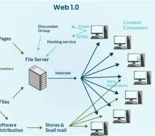

Web 1.0

Web 1.0 refers to the first generation of the World Wide Web, which existed
roughly from the early 1990s to the early 2000s. It is often called the
"read-only web" because users could only view information without interacting
or contributing content.
During this period, websites were simple, static pages created using basic
HTML. There was little to no user interaction, and content was controlled
entirely by website owners.
Characteristics of Web 1.0
- Static web pages with fixed content
- Limited user interaction
- Information flows in one direction (from website to user)
- Basic design with simple text and images
- No social media or user-generated content
Examples of Web 1.0
- Personal websites with static information
- Online directories and simple company pages
- Early news websites
Advantages
- Simple and fast to load
- Easy to create and maintain
- Reliable since content rarely changes
Limitations
- No user interaction or feedback
- Content could not be easily updated by users
- Lack of dynamic features and personalization
In summary, Web 1.0 laid the foundation of the modern web by providing access
to